原图直接裁自论文 PDF；300 dpi PNG 保留原始内容，裁剪 PDF 保留来源中的矢量或位图。版权归原论文权利人；教学重绘不代表原论文实验结果。来源和裁剪坐标见 manifest.json。
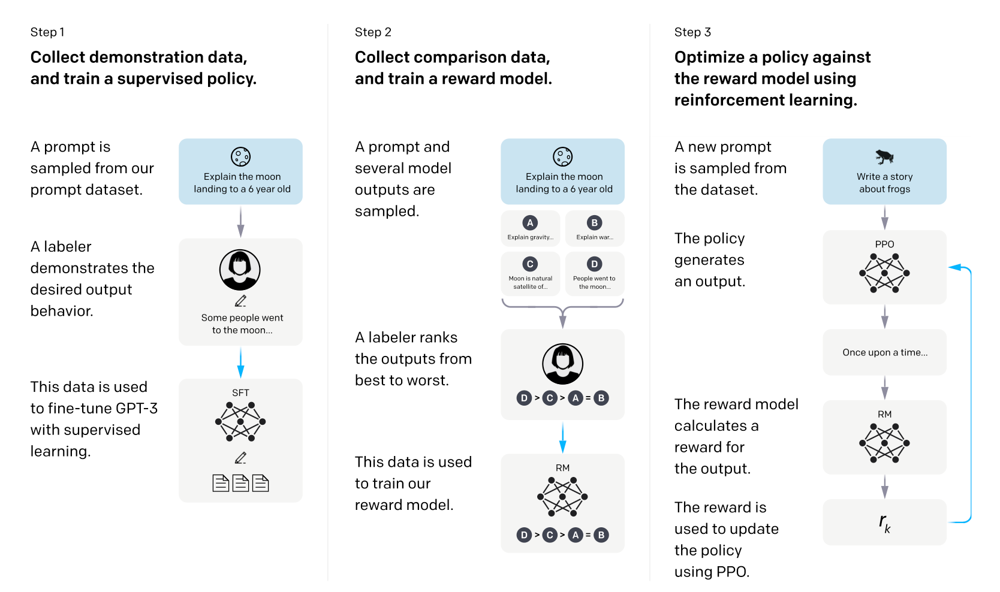
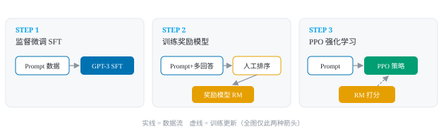
下载原图 PNG · 下载裁剪 PDF · 教学重绘 SVG · 论文 PDF · 第 3 页
对照看什么：原图三阶段横排，包含标注员、模型训练和采样；重绘仅保留阶段骨架。
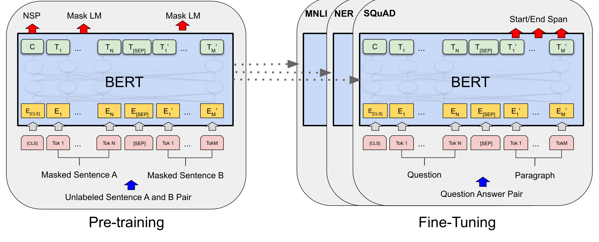
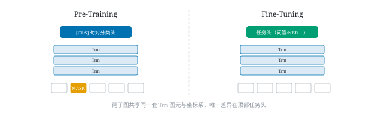
下载原图 PNG · 下载裁剪 PDF · 教学重绘 SVG · 论文 PDF · 第 3 页
对照看什么：原图含预训练任务头和多个微调任务；重绘只保留双阶段关系。
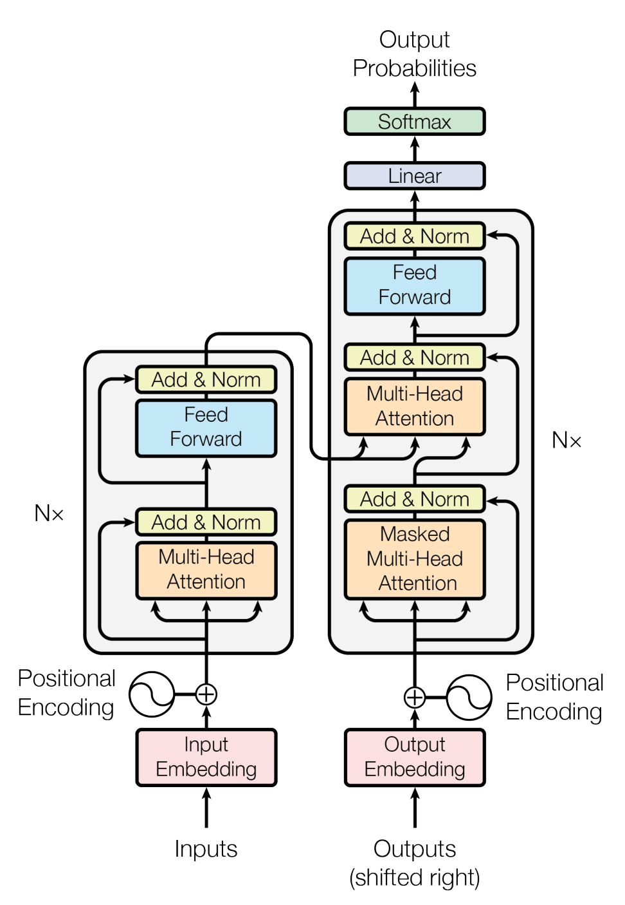
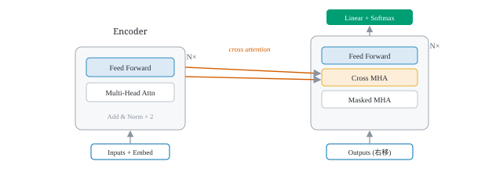
下载原图 PNG · 下载裁剪 PDF · 教学重绘 SVG · 论文 PDF · 第 3 页
对照看什么：原图保留完整编解码子层、残差与归一化；重绘压缩了这些结构。
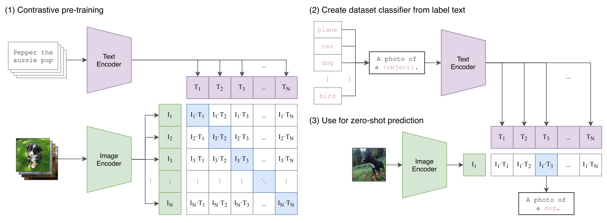
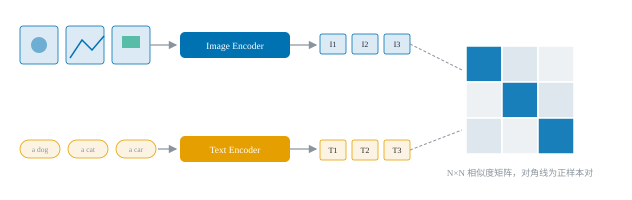
下载原图 PNG · 下载裁剪 PDF · 教学重绘 SVG · 论文 PDF · 第 2 页
对照看什么：原图还含文本构造分类器和零样本预测两步；重绘主要展示对比训练。
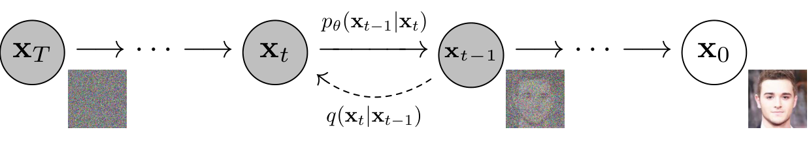
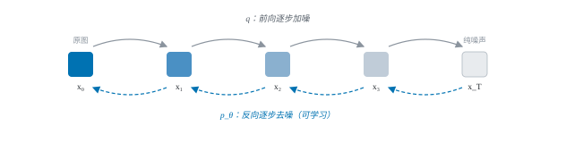
下载原图 PNG · 下载裁剪 PDF · 教学重绘 SVG · 论文 PDF · 第 2 页
对照看什么：原图 xT 在左、x0 在右；生成方向向右、加噪方向向左。重绘改变了状态排列，不能照搬其方向说明。
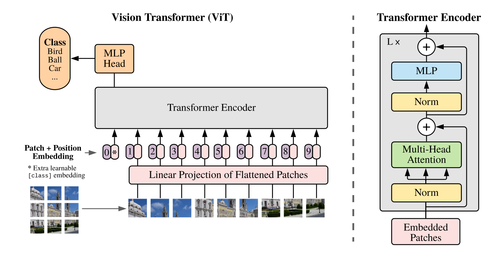
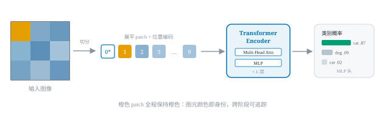
下载原图 PNG · 下载裁剪 PDF · 教学重绘 SVG · 论文 PDF · 第 3 页
对照看什么：原图同时展开 Transformer Encoder 内部与分类头；重绘强调 patch 转 token。
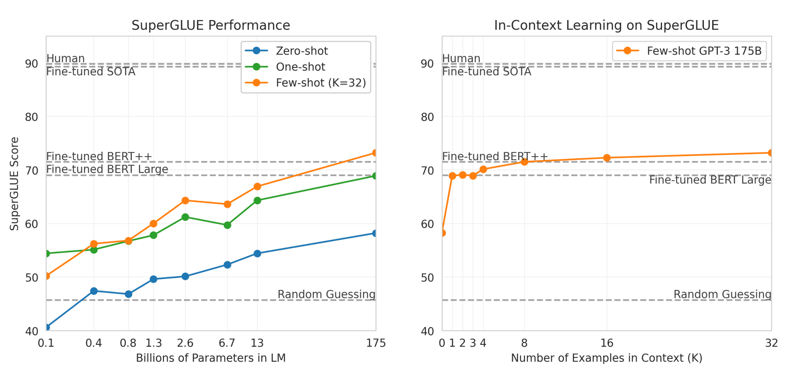
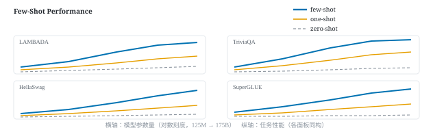
下载原图 PNG · 下载裁剪 PDF · 教学重绘 SVG · 论文 PDF · 第 20 页
对照看什么：选用 Figure 3.8：左图是模型规模，右图是上下文示例数。原图是两个面板；重绘多任务曲线并非逐点复现，示意数值不可当作原论文结果。
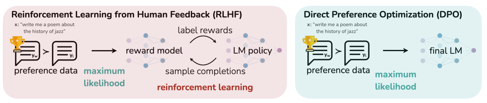
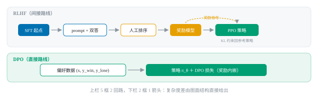
下载原图 PNG · 下载裁剪 PDF · 教学重绘 SVG · 论文 PDF · 第 2 页
对照看什么：原图 RLHF 与 DPO 左右并排；重绘改为上下两行。原图包含采样与奖励计算回路。
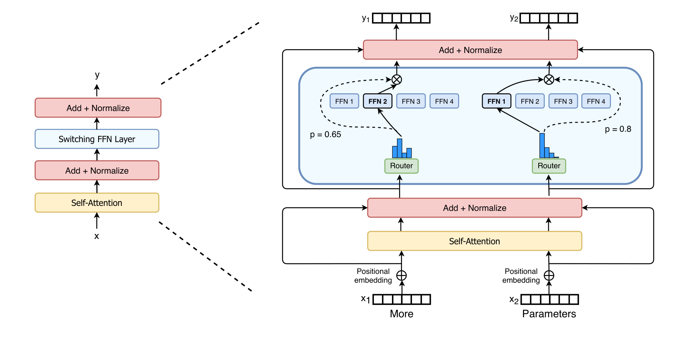
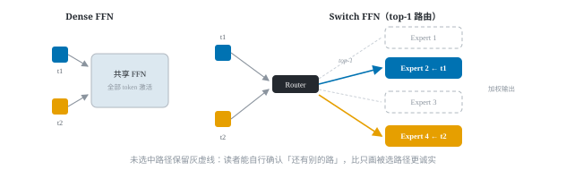
下载原图 PNG · 下载裁剪 PDF · 教学重绘 SVG · 论文 PDF · 第 4 页
对照看什么：原图左侧是编码器模块定位，右侧展开稀疏 FFN；左侧不是密集 FFN 对照。每个 token 选一个专家，两个 token 可选择不同专家。
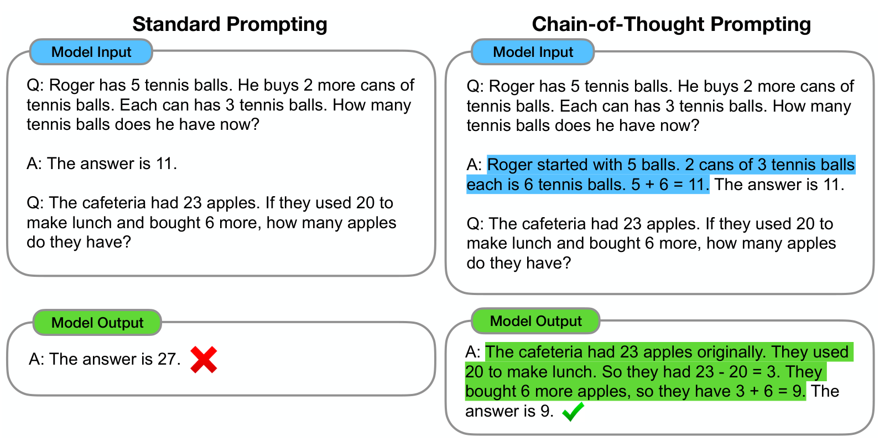
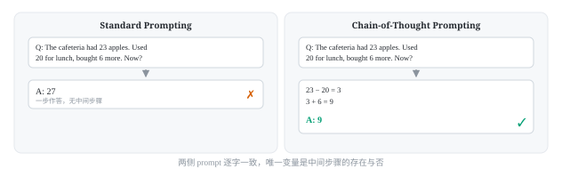
下载原图 PNG · 下载裁剪 PDF · 教学重绘 SVG · 论文 PDF · 第 1 页
对照看什么：原图包含网球示例和食堂测试题两组输入输出；重绘只保留提示对照。原图最终答案为 27 与 9。